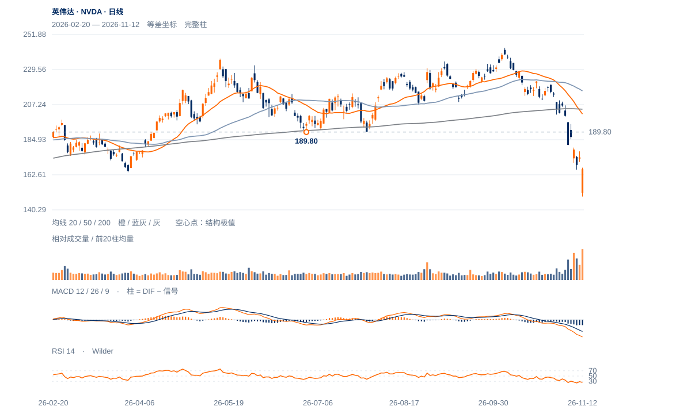

原修复判断已经失去保持
11日收173.73曾回170.24之上，12日再收166.19；旧受损线170.24重新失守，原181.46向上条件并未完成。
未来1—5日仍偏弱并可能剧烈反抽；先看167.14—170.77下缺口能否被持续回收。1—3周尚无扭转下降背景的价格确认。

查看大图 ↗11日收173.73曾回170.24之上，12日再收166.19；旧受损线170.24重新失守，原181.46向上条件并未完成。
12日最高167.14低于前日低170.77，形成167.14—170.77整日下缺口；现价仍在其下。此前179.92—185.22下缺口也未填补，压力是分层的。
当日最低148.80、收166.19，收盘位置94.8%、量比4.49；这是有力的盘中回收。但日涨跌仍-4.34%，RSI25.99、20日跌23.50%，还不能将高量定性为已完成吸收。
极大量与接近日高收盘支持短线卖压衰减候选；若167.14—170.77迅速回收并保持，偏弱短线判断必须降级，不能因背景偏空忽视反证。